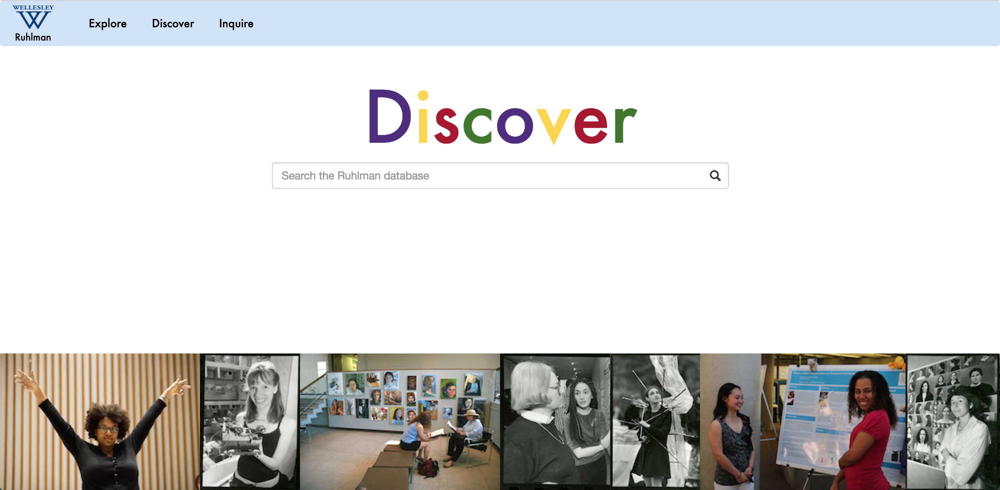
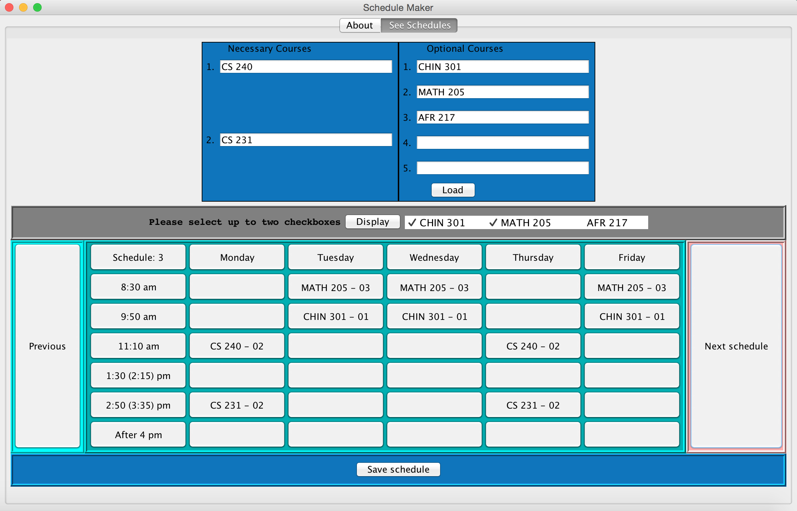
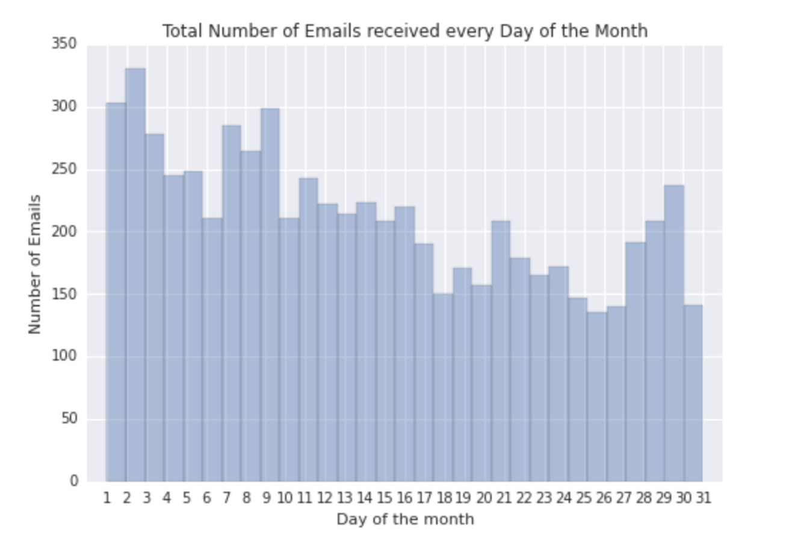
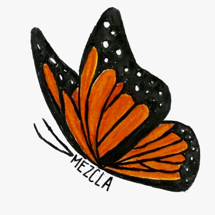
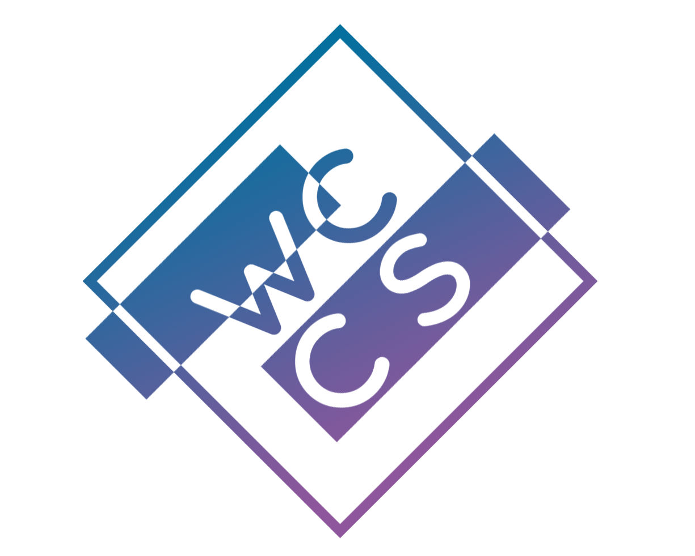
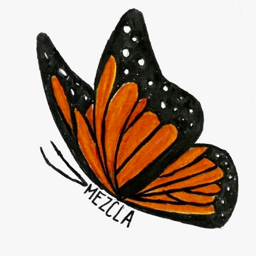
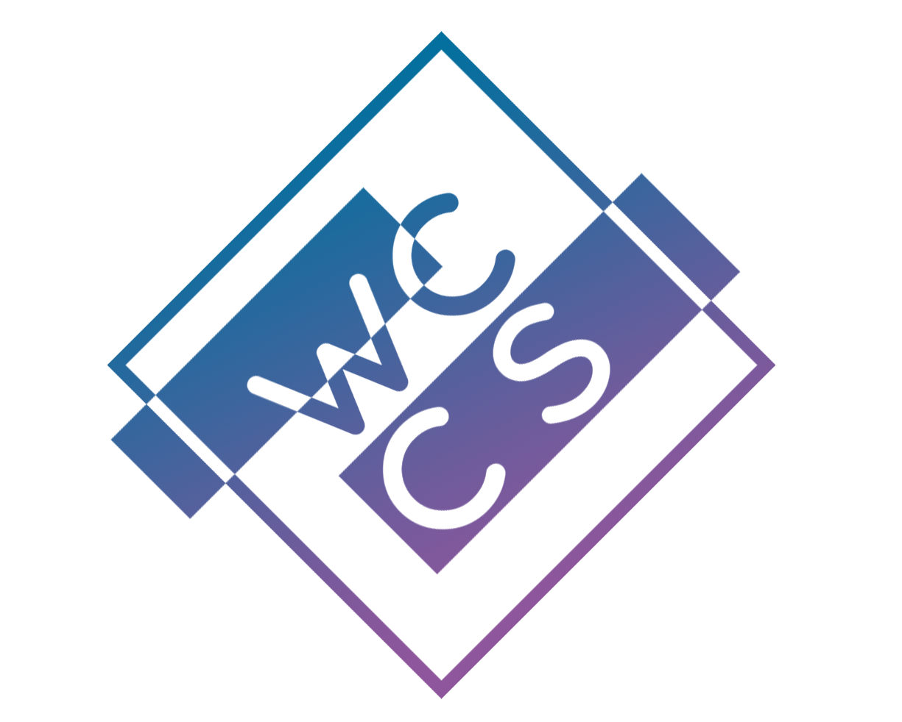

Andrea Jackson
Hello! I'm a Latinx junior at Wellesley College studying Computer Science. I'm passionate about data science and creating programs that improve people's lives.
This past Fall semester I took an applied data visualizations class at the MIT Media Lab (MAS.S70). Check out interesting projects I created for this class here.
Projects
Ruhlman Web application

I created a web application that allows user to explore conference abstracts from 20 years of Ruhlman Conferences. Users can generate graphs of and search a database of the abstracts. This project was the result of a program I participated in Summer 2016 - Wellesley Science Center Summer Research Program.
I created a web application that allows user to explore conference abstracts from 20 years of Ruhlman Conferences. Users can generate graphs of and search a database of the abstracts. This project was the result of a program I participated in Summer 2016 - Wellesley Science Center Summer Research Program.
Schedule Maker

My two teammates and I built a program that generates up to 15 schedules for users. Users input two courses they must enroll in and 2-3 optional courses. I created the GUI for the project and helped implement the action listeners of the GUI.
My two teammates and I built a program that generates up to 15 schedules for users. Users input two courses they must enroll in and 2-3 optional courses. I created the GUI for the project and helped implement the action listeners of the GUI.
Gmail Analysis

For a data, analytics and visualizations course I analyzed my gmail inbox, created visualizations of my analysis and used hypothesis testing to determine when I am more likely to receive emails.
project
For a data, analytics and visualizations course I analyzed my gmail inbox, created visualizations of my analysis and used hypothesis testing to determine when I am more likely to receive emails.
projectCS 315: Data Mining

In Spring 2017 I took a CS class on Data and Text mining on the web. Learn more about the projects I worked on in this class here.
In Spring 2017 I took a CS class on Data and Text mining on the web. Learn more about the projects I worked on in this class here.
Organizations
Mezcla

Mezcla is a Latinx cultural organization at Wellesley College that focuses on the academic, social, political and well-being of Wellesley students of Latinx descent. I've served on the e-board of Mezcla as the CAN representative from 2015-2016 and have participated in the annual Latinx Culture Show.
Wellesley Computer Science Club

The Computer Science Club is a student org that enriches the CS community's experience in computer science beyond the CS curriculum. The CS Club hosts well-attended hackathons, networking events and technical workshops for students. For 4 semesters I have served as the Workshop and Co-Workshop chair for the CS Club. Topics of workshops organized in past semesters include: databases, Framer.js, git and HTML/CSS.
Contact Me
Mezcla

Mezcla is a Latinx cultural organization at Wellesley College that focuses on the academic, social, political and well-being of Wellesley students of Latinx descent. I've served on the e-board of Mezcla as the CAN representative from 2015-2016 and have participated in the annual Latinx Culture Show.
Mezcla is a Latinx cultural organization at Wellesley College that focuses on the academic, social, political and well-being of Wellesley students of Latinx descent. I've served on the e-board of Mezcla as the CAN representative from 2015-2016 and have participated in the annual Latinx Culture Show.
Wellesley Computer Science Club

The Computer Science Club is a student org that enriches the CS community's experience in computer science beyond the CS curriculum. The CS Club hosts well-attended hackathons, networking events and technical workshops for students. For 4 semesters I have served as the Workshop and Co-Workshop chair for the CS Club. Topics of workshops organized in past semesters include: databases, Framer.js, git and HTML/CSS.
The Computer Science Club is a student org that enriches the CS community's experience in computer science beyond the CS curriculum. The CS Club hosts well-attended hackathons, networking events and technical workshops for students. For 4 semesters I have served as the Workshop and Co-Workshop chair for the CS Club. Topics of workshops organized in past semesters include: databases, Framer.js, git and HTML/CSS.
Contact Me
ajackso2 at wellesley dot edu